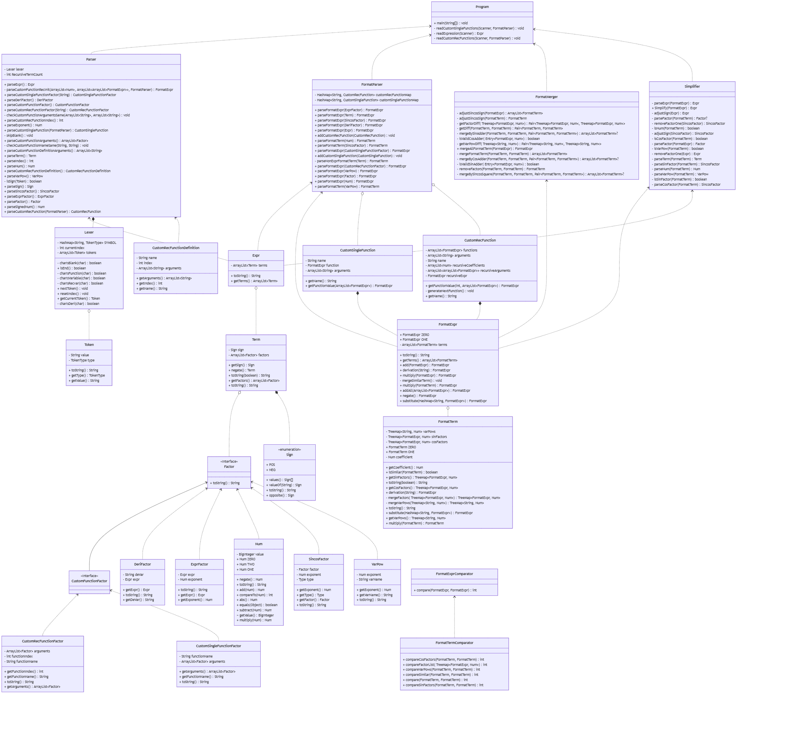

北航2025面向对象设计与构造第一单元总结
你好！本文章为该博客的第十一篇文章！
本文章包含北航2025面向对象设计与构造第一单元作业的思路简述，期望通过一个我自己用的顺手的构造给予一些设计上的建议。
本文章已经投送至本单元博客作业！
需要注意的是，本文仅完全适用于北航2025OO课程，对于之前和之后的课程，课程部分内容可能会发生变动，发生冲突时请以当前课程为准！
以及，如果本文章涉及学术诚信问题，请第一时间和我联系，我将及时做出修改，谢谢支持！
为什么我把按单次作业写文章变成按单元写
第二次还是第三次第三次作业生病之后，越发感觉为了一个课程而累死累活是非常不值得的事情。身体重要。
而且我也不是那种思路随时都能来的人。
虽然我自认为我的想法还是可以写文章发博客的。
（也许你会看到文章里有一些特别不协调的东西，毕竟课程要求和我想写的东西还是有点出入的。）
前言
从本单元作业开始之初，我始终用一句话来自省：在这门课上，解决问题的应该是好的设计，并非巨量的功能与复杂的优化。
如今完成了一个月的任务，很难说自己是否准确的践行了这一句话，但是确实对“好的设计”有了一点点理解。
总之，让我来评价我所设计的架构的话，我会如此比喻：一个灵活的胖子。
架构设计与迭代过程
成品概述与优化方法
贯穿本单元作业始终的三个问题是：
- 我们应该把表达式处理划分为几个阶段？
- 每个阶段可以设计怎样的结构以达成易扩展的目的？
- 怎样才能使每阶段的处理更加高效？
优先级从上至下递减。如果解决不好这些问题，则或者会反复重构，或者bug百出，或者TLE与MLE齐飞。
我的回答如下：
-
从输入到输出，实际上就是字符串，表达式，规格化表达式（其实就是很多人架构里出现的多项式和单项式）三者的互相转化。
所以我分为五个阶段处理：
- 词法和语法分析（
Lexer&Parser）； - 表达式规格化（
FormatParser）； - 规格化表达式化简（
FormatMerger）； - 规格化表达式普通化与微调（
Simplifier）； - 转化为字符串（使用表达式类的
toString()方法）。
- 词法和语法分析（
-
对于表达式，我的拆解几乎严格按照形式化描述进行拆分，大致处理为表达式-项-因子的结构；
对于规格化表达式，我将其定义为多个规格化项之和，一个规格化项包含因子，幂函数，三角因子信息。
额外的，我们将自定义普通函数和递归函数定义信息设为两个独立的类，在表达式规格化时使用该类保存的信息展开函数调用因子。
对于以上所有类型，我均采用了不可变类型的设计，不可变类型对于本次作业来说非常有利于代码实现的清晰。
-
大部分问题已经在上述架构里被解决了。唯一一个需要提及细节的是对规格化表达式的优化，关键的思路如下：
- 规格化表达式在初始化时排序和合并同类项；
- 规格化项使用
TreeMap存储幂函数和三角因子。（这也就要求我们对规格化表达式和规格化项设计比较器类）
类图如下：

我会在下面展开我的具体设计，同时给出设计这个架构的过程实际上走过什么样的弯路。
第一次迭代
本次作业仅涉及单变量多项式函数的表达式展开。
此时我把表达式处理划分的方法为：词法和语法分析，规格化（去括号，合并同类项），简化（提取常数因子符号并调整项的顺序，移除常数1），转为字符串。
此时我并没有设计规格化表达式类，毕竟针对第一次作业来说，原有的表达式类已经足够好操作了，最多需要记录一下这个类是否已经规格化。
一些细节：
-
用于代替规格化表达式的，我的做法是给表达式类和项类加了个
getFormat方法。毕竟，只要我们实现了一个合理的合并同类项方法，这个架构在本次作业基本上就没有什么改变的必要了。当然，最主要的原因是我不知道后续的任务要求如何，不敢贸然加入新的结构。事后证明，其实多项式类是一个很容易扩展的类，我这种做法反而是给自己挖坑。
然而其中也诞生了后续架构的种子。
getFormat方法的最主要作用是给出升幂顺序下的coef*x^expo各项，其中要求对表达式和项等类实现比较器，这为后来使用TreeMap优化提供了启发。 -
我给项单独设计了一个符号信息，且保证符号信息仅存于项这一级，这个做法是为了输出表达式时能够快速连缀各个项，同时为化简时常数因子的符号提取提供存储空间。
-
实际上，此时我对幂函数的处理已经考虑了多变量的情况，给幂函数设计了
name和exponent两个属性。 -
展开表达式时，我选择了由下至上进行展开和化简，以应对
((((x^8)^8)^8)^8)^8的特殊情况，尽管此时并未存在括号嵌套问题。
第二次迭代
本次作业新增了三角函数因子，自定义递归函数定义与调用。
此时，考虑到原先的 getFormat 方法会使得表达式类变得极度臃肿（表达式和项都选择用 ArrayList 聚合元素，且因子的种类繁多），我选择了设计规格化表达式和规格化项，把原先的表达式类变成了一个字符串和压缩信息后的表达式的中间类。
对于规格化表达式的存储，我的做法为：
- 规格化项包含四个部分：
- 系数;
- 保存幂函数的
TreeMap<Var, Expo>; - 保存正弦因子的
TreeMap<FormatExpr, Expo>; - 保存余弦因子的
TreeMap<FormatExpr, Expo>。
- 规格化表达式为规格化项列表，构造时自动排序。
（至于为什么不用 HashMap，一方面是因为受到第一次作业写比较器类的影响，另一方面是自行实现 hashCode 的碰撞频率很容易飙升还容易写错，效果可能甚至不如 TreeMap，同时 TreeMap 天然支持有序遍历，非常便于因子相乘和排序）
另外，对于自定义递归函数的处理，我将其分为定义和因子两个类处理：
- 对于定义，我保留其参数列表，递归信息和已使用的递归函数展开后的规格化表达式，在需要展开函数因子时动态的递推展开。（这个设计是存在问题的，在第三次作业中会提及）
- 对于调用，我将其设置为一类单独的因子存放在项中，在表达式规格化时将其替换为代入函数后得到的规格化表达式。
最后，考虑到三角函数化简的灵活性，且其化简结果与规格化表达式的形式仍然兼容，我选择单独设立一个过程类（FormatMerger）用于处理三角函数相关的简化，同时将上一次作业的简化步骤（Simplify）保留，放在规格化表达式化简后。这样，两个过程类各司其职，保证了化简过程的有序性和针对性。
（实际上，在规格化表达式的计算中会混入诸如 sin(0)=0 的化简，以及同类项的合并，这种功能的冗杂算是一种计算需求带来的无奈之举）
在第二次作业中，我添加了三个优化方法：
- 将三角函数因子内的规格化表达式调整为第一项一定非负；
- 如果两个规格化项的三角因子恰好为某一项多出
sin(Expr)^2，另一项多出cos(Expr)^2，则使用sin(Expr)^2+cos(Expr)^2=1消除其中一项。 - 如果两个规格化项的三角因子恰好为某一项多出
sin(ExprA)*cos(ExprB)，另一项多出sin(ExprB)*cos(ExprA)，则使用sin(ExprA)*cos(ExprB)+/-sin(ExprB)*cos(ExprA)=sin(ExprA+/-ExprB)消除其中一项。
优化时仍然是从内向外优化。
（对于二倍角公式的使用，由于做作业时有使用二倍角公式产生了负优化的先例，所以我始终未加入相关优化，现在想想，产生负优化的原因可能是二倍角公式产生优化的条件比较苛刻，比如说必须要同时消除所有因子才能起到明显的优化效果之类的？）
第三次迭代
本次作业新增了求导因子，自定义普通函数定义与调用，隐含的一个要求是函数的互相调用。
对于求导因子，我们效仿自定义递归函数因子，额外的定义一个求导因子类，在表达式规格化时对因子内的规格化表达式进行求导。（也就是说，求导的过程放在了规格化表达式和规格化项中，表达式类本身不支持求导）
对于自定义普通函数的定义和调用，虽然其定义类和调用类彼此独立，但我们实际上可以复用自定义递归函数的部分内容（主要是解析部分），总而言之类似于重复了一遍第二次作业的工作。
一个对我来说不太好做的事情在于函数的互相调用。在我的设计中，无论是自定义普通函数还是递归函数，在存储函数表达式时，存储的都是完全展开后的规格化表达式，所以我在这里选择每读入一个表达式就必须一路转化成规格化表达式。为此，我改写了 FormatParser 类，向其加入了自定义普通函数列表和自定义递归函数列表的字段，每次读入一个表达式时，我都在读入字符串后立刻进行转化与规格化，在所有表达式读入结束之后再进行后续化简。
（实际上这也未尝不是一个优化性能的做法，但是这和我一开始设计架构时预想的流程有较大不同）
最后，我额外添加了一个优化方法：如果两个规格化项的三角因子恰好为某一项多出 cos(ExprA)*cos(ExprB)，另一项多出 sin(ExprA)*sin(ExprB)，则使用 cos(ExprA)*cos(ExprB)+/-sin(ExprA)*sin(ExprB)=cos(ExprA-/+ExprB) 消除其中一项。
后续可能的迭代情景与修改方法
一个简单的例子就是新增底数为 的指数函数。按照现在的架构，我们需要做如下改动：
- 新增一个指数函数因子与其解析方法。
- 由于 ，所以对于规格化项来说，我们可以直接存储一个规格化表达式的字段用于保存合并后指数函数中指数部分的表达式。
- 在规格化项的求导功能里新增对于指数函数因子的处理。
- 在规格化项的比较器里新增对于指数函数因子的比较（加一个对该因子的比较即可）。
- 对
FormatMerger的各方法添加对于指数函数因子的比较。
另外，现有的架构实际上已经支持多变量的情况。
复杂度分析
各类的复杂度数据如下：
| Class | OCavg | OCmax | WMC |
|---|---|---|---|
| CustomRecFunctionDefinition | 1 | 1 | 4 |
| DeriFactor | 1 | 1 | 4 |
| Token | 1 | 1 | 4 |
| Num | 1.1 | 2 | 11 |
| ExprFactor | 1.2 | 2 | 6 |
| VarPow | 1.2 | 2 | 6 |
| CustomRecFunctionFactor | 1.4 | 3 | 7 |
| CustomSingleFunctionFactor | 1.5 | 3 | 6 |
| Expr | 1.5 | 2 | 6 |
| Program | 1.5 | 2 | 6 |
| Term | 1.57 | 4 | 11 |
| SincosFactor | 1.6 | 4 | 8 |
| CustomSingleFunction | 1.67 | 3 | 5 |
| Sign | 2 | 2 | 4 |
| FormatExpr | 2 | 5 | 26 |
| Lexer | 2.2 | 13 | 22 |
| Parser | 2.44 | 6 | 66 |
| FormatTermComparator | 3.17 | 6 | 19 |
| CustomRecFunction | 3.25 | 5 | 13 |
| FormatParser | 3.29 | 15 | 56 |
| Simplifier | 3.29 | 8 | 56 |
| FormatTerm | 3.82 | 13 | 65 |
| FormatMerger | 4.85 | 9 | 63 |
| FormatExprComparator | 5 | 5 | 5 |
可以看出，高耦合度的代码主要集中于各个过程类，以及规格化表达式相关类型。考虑到过程类本身涉及对不同类之间的转换和难以统一描述的操作，以及规格化表达式承载了大量且递归的计算操作，耦合度的急剧上升在意料之内。
接下来考察一些复杂度较高的方法：
| Method | CogC | ev(G) | iv(G) | v(G) |
|---|---|---|---|---|
| FormatMerger.adjustSincosSign(FormatTerm) | 16 | 1 | 8 | 9 |
| FormatMerger.mergeAllFormatTerm(FormatExpr) | 19 | 7 | 6 | 8 |
| FormatMerger.mergeBySincosSquare(FormatTerm, FormatTerm, Pair<FormatTerm, FormatTerm>) | 14 | 5 | 14 | 16 |
| FormatParser.parseFormatExpr(Factor) | 8 | 8 | 8 | 8 |
| FormatParser.parseNonExprFormatTerm(Term) | 42 | 8 | 13 | 15 |
| FormatTerm.derivation(String) | 19 | 5 | 9 | 11 |
| FormatTerm.substitute(HashMap<String, FormatExpr>) | 24 | 7 | 9 | 13 |
| FormatTerm.toString(boolean) | 21 | 3 | 12 | 14 |
| FormatTermComparator.compareVarPows(FormatTerm, FormatTerm) | 9 | 6 | 4 | 7 |
| Lexer.Lexer(String) | 24 | 11 | 13 | 15 |
| Parser.parseFactor() | 7 | 6 | 7 | 7 |
| Simplifier.adjustSign(Expr) | 17 | 1 | 8 | 9 |
| Simplifier.parseFactor(FormatTerm) | 5 | 5 | 5 | 5 |
复杂的方法集中于简化和规格化项的计算。
表达式类作为中间类，其高内聚低耦合原则被执行的较好。
架构优劣
我之前评价我的架构为“一个灵活的胖子”，实际上这就包含了所有优缺点了。
优点：
- 可扩展性强，加入一个因子或一种新的函数非常简单。
- 易于添加有针对性的优化，对于处理过程的拆解决定了各种优化的所处位置清晰，方法编写简短。
- 不可变类型保证了迭代过程中的正确性。
缺点：
- 搭建架构的代码本身过于冗长，搭架构本身十分费劲。
- 自定义函数定义较为混乱。
- 由于采用了不可变类型和
TreeMap，在进行计算时会把对三角函数因子的处理写的很长，并且容易写错。
bug检测与成因分析
对我的程序的bug检测
三次作业均为0被刀。
不过，在第三次作业的互测中，我无意中构造了一个针对自己程序bug的数据（遗憾的是这个bug并未被其他同学发现，可能是因为此种样例不太好被随机数据生成器生成）：
1 | 1 |
正确答案为 sin(x)^2，我的答案为 sin(x)。究其原因，是我在实现规格化项的代换方法时，认为代换后的三角因子结果可以直接写入新规格化项的 TreeMap 中，无需考虑新项之前是否有该因子（我认为此时代换后的三角因子唯一存在）。
这种数据的存在，证明了完全随机的数据生成器的局限性，实际上我们不得不去手工构造足够精确的corner case。
互测中的bug检测
第一次作业中，我刀出了别人两个bug，一个是 -(x)^0 这种处理零次幂时对符号的错误处理，一个是 x^3+ 0 之类的连缀各个项时对0前符号添加与否问题的处理错误。此二bug的出现，实际上有功于大量随机数据的生成，考虑到此时的数据生成器极易完成，实际上并未体现充足的人类智慧，还是力大砖飞的结果。
第二次作业中，我手动构造了一个复杂数据：
1 | 1 |
该数据把一个同学卡出了TLE，把另一个同学卡出了格式错误，但是构造该数据时我并未针对任一bug，也许具有一定复杂度的数据也可以探查相当多的分支？
另一个较好的数据是
1 | 0 |
这个数据卡出了之前格式错误同学的格式错误和计算结果错误（其结果为 sin(-x)^3）。此数据的构造方式为对随机生成的超过代价的数据进行逐步简化，得出简单典型数据，也证明了评测机和人类智慧结合的重要性。
第三次作业由于时间冲突，并未搭建评测机，对corner case的考虑也极其有限，故未能刀出别人的bug。
（实际上我注意到了一个同学的 equals 方法速度极慢，且存在卡法，但是并未构造出符合代价要求的数据）
心得与未来方向
实际上综观三次迭代，我时常会陷入一种“这样写是否会给未来挖坑”的纠结，有时候一个设计可能要纠结半天，或者写的十分冗长以“应对下一次迭代可能产生的局面”。
但是实际上，除了第一次迭代产生的 getFormat 这个设计是坑以外，其他的设计并没有造成过多的浪费。
只是，一共2500+行的代码量（在删除最终不使用的部分之前，这个数字曾经一度飙升至2800+）确实远超他人框架所需的代码量，所以该如何在保证功能正确高效的前提下精简框架，仍然是一个值得思考的问题。
至于如何修改课程使得未来的学子对第一单元的学习更加顺利，也许我可以提出一些对本学期内容的修改意见：
-
考虑到前两次作业的任务量较大，第三次作业内容相比之下急剧减少，可以考虑调换自定义递归函数和自定义普通函数在作业中的出现顺序。
（实际上，第二次作业难度的重要来源在于三角函数的加入，大部分同学能把这一部分处理好已经很不容易了）
-
在第一次作业之前和之中加强对递归下降解析方法的引导。
一个互相警示的结语
相信性能分的设立反而成了让相当多的同学丢失了好的设计，甚至丢失了巨量正确性得分的一大噩梦。
所以这里有一个警示：面向对象设计与构造不是数据结构与算法。
我的意思是，至少在这门课里，作业的完成要求只有一条：用好的设计解决一切问题。